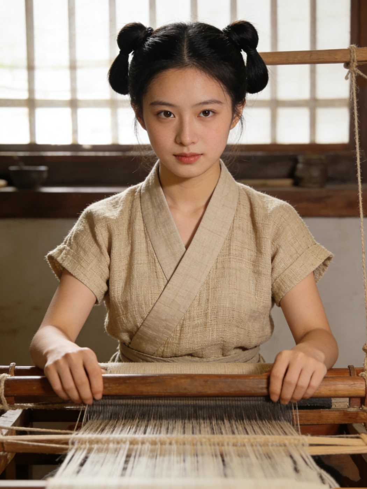

Featured · AIGC 微短剧 江南丝染 · 阿绣的匠心 2026.06 04′55″ 制作 / 统筹 小组：李文越 · 龚姝悦 · 贾鑫悦 大唐开元年间，杭州丝绸世家少女阿绣临危受命，守护祖传「练染印整」技艺、洗刷家族冤屈。我们用 AIGC 还原江南盛景，以微短剧的形式让非遗技艺从博物馆里走出来。 我的工作 · 项目策划、资源协调与整体进度把控；参与剧本与分镜讨论，配合视觉风格与后期节奏的统一。 观看正片→ 剧本 PDF 故事大纲 汇报 PPTX 